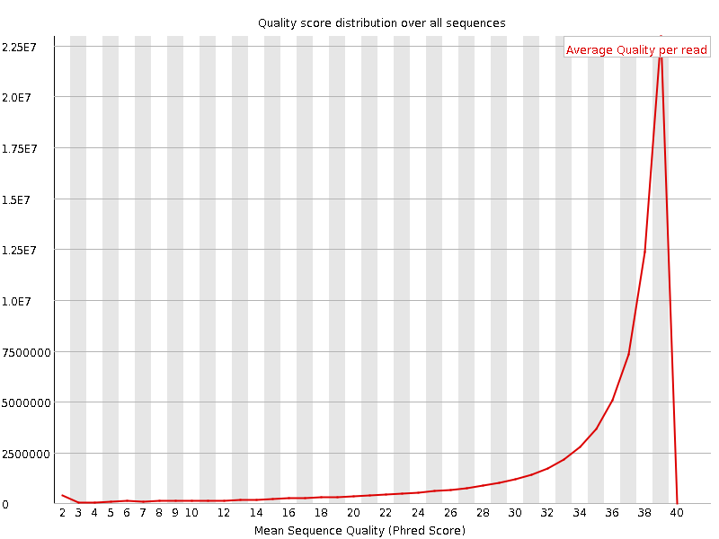
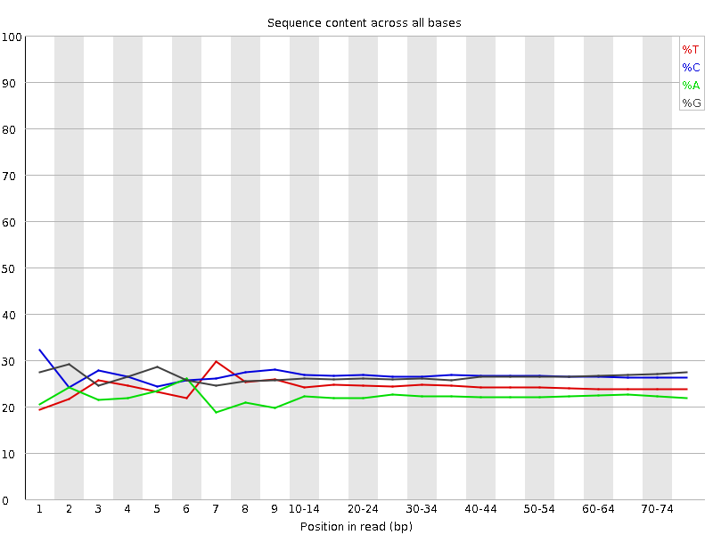
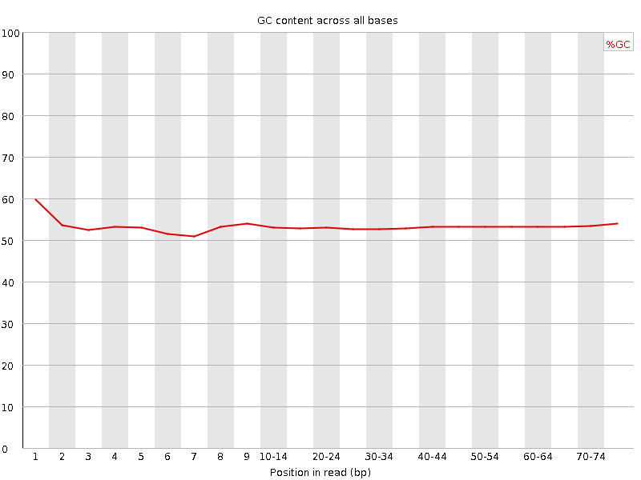
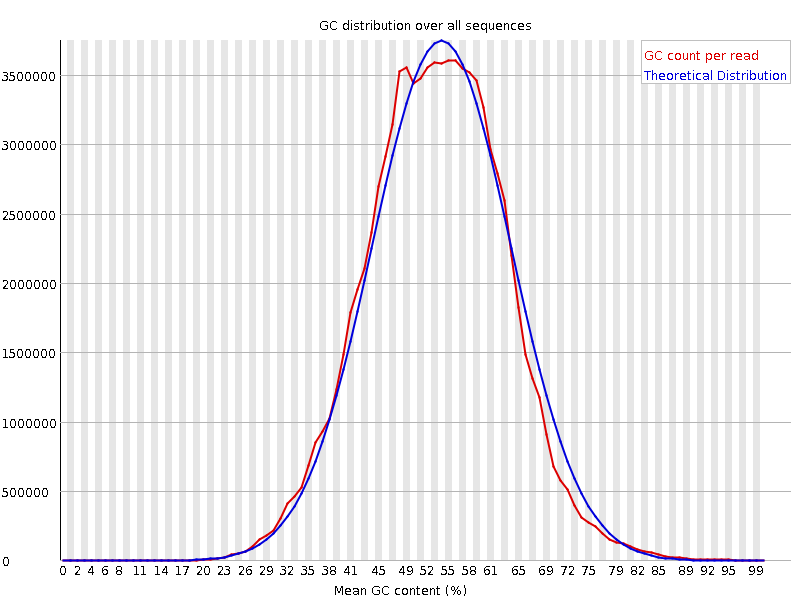
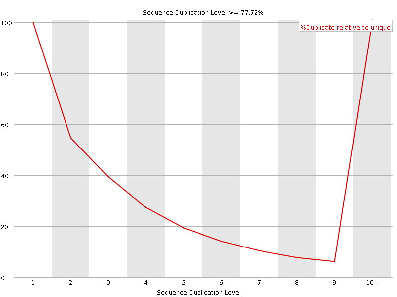
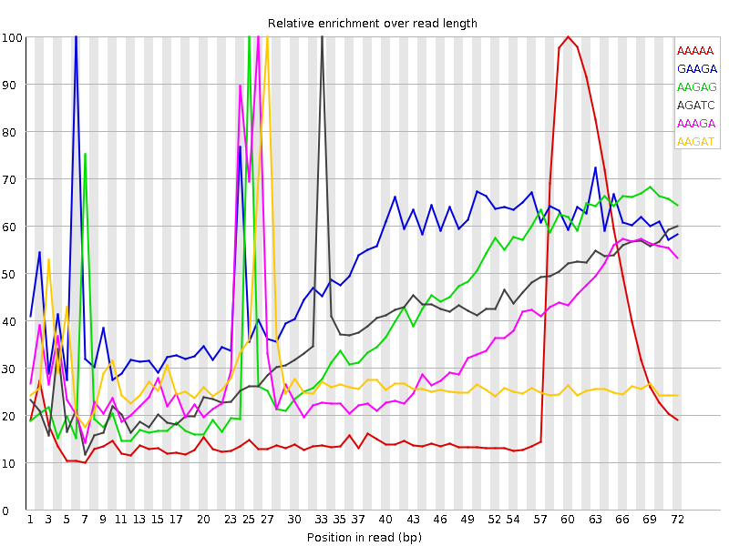

![[OK]](Icons/tick.png) Basic Statistics
Basic Statistics
| Measure | Value |
|---|---|
| Filename | SRR317048_2.fastq |
| File type | Conventional base calls |
| Encoding | Sanger / Illumina 1.9 |
| Total Sequences | 70788979 |
| Filtered Sequences | 0 |
| Sequence length | 76 |
| %GC | 53 |
Per base sequence quality

Per sequence quality scores

![[WARN]](Icons/warning.png) Per base sequence content
Per base sequence content

Per base GC content

Per sequence GC content

Per base N content

Sequence Length Distribution

![[FAIL]](Icons/error.png) Sequence Duplication Levels
Sequence Duplication Levels

Overrepresented sequences
| Sequence | Count | Percentage | Possible Source |
|---|---|---|---|
| CCTGCCAGTAGCATATGCTTGTCTCAAAGATTAAGCCATGCATGTCTAAG | 181266 | 0.2560652838346489 | No Hit |
| CTGCCAGTAGCATATGCTTGTCTCAAAGATTAAGCCATGCATGTCTAAGT | 93176 | 0.1316250090285947 | No Hit |
Kmer Content

| Sequence | Count | Obs/Exp Overall | Obs/Exp Max | Max Obs/Exp Position |
|---|---|---|---|---|
| AAAAA | 7417885 | 2.626044 | 11.368569 | 60 |
| GAAGA | 10428185 | 2.6151643 | 5.1433506 | 6 |
| AAGAG | 9557155 | 2.3967288 | 6.0971365 | 25 |
| AGATC | 8900695 | 2.027149 | 5.4591985 | 33 |
| AAAGA | 6391710 | 1.9044657 | 5.591845 | 26 |
| AAGAT | 5389785 | 1.4720482 | 5.228576 | 27 |
| TCAAA | 4920440 | 1.3314704 | 5.310267 | 24 |
| TTAAA | 3941855 | 1.1724966 | 5.7224965 | 56 |
| ATTAA | 3628905 | 1.0794102 | 5.1658216 | 30 |
| TAAAA | 3137300 | 1.018058 | 6.4618883 | 57 |